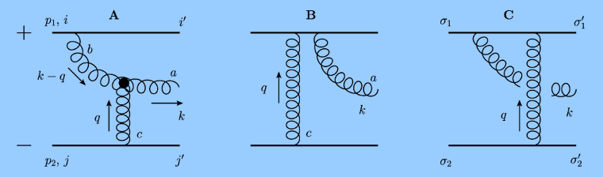
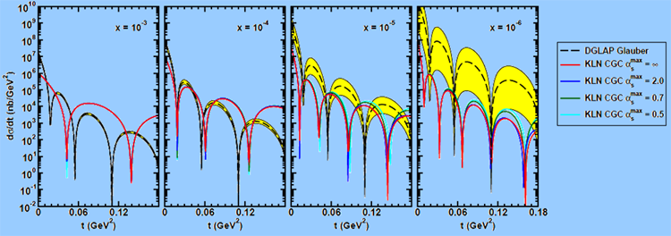
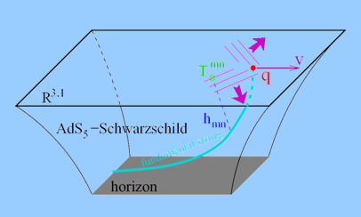

Research
A brief introduction to the physics I am interested in and a description of my past research can be found here, and an online listing of the papers on which I am an author can be found here.
Potential Student Research Projects
Honours, MSc, or PhD (Expectation levels adjusted accordingly)

- Publish a paper on the production of particles in heavy ion collisions. Suppose I collide two large nuclei, say lead, at extremely high energies, say 1.5 PeV (1.5 x 10^15 eV). How many particles emerge? At these energy scales it is possible that the lowest order and next-to-lowest order analytic formulae derived for these processes are applicable, but one must check! Compare your results to the brand new data emerging right now from the LHC and publish your results in a leading physics journal.

- Publish a paper on the distribution of matter in ultrarelativistic nuclei. At very high energies the nucleus doesn't look like a collection of protons and neutrons anymore but rather as a sea of gluons. As the energy increases the shape of the gluon distribution changes: the nucleus gets bigger at higher energies. In the future one might hope to measure this sea of gluons in a nucleus by smashing electrons into the nuclei and examining the distribution of particles that emerge. Formulas for this distribution exist and have been implemented in some interesting cases; let's do the calculations for the remaining cases and publish the results in a leading physics journal.

- Suppose I make a crazy proposition. What if the 4D physics of quantum chromodynamics at high but not-too-high energies is best described by string theory in 5D? Now suppose I ask: what happens if I try to drag a quark through this string theory sea? Learn string theory and general relativity techniques. You'll never think about the world in the same way again.
|